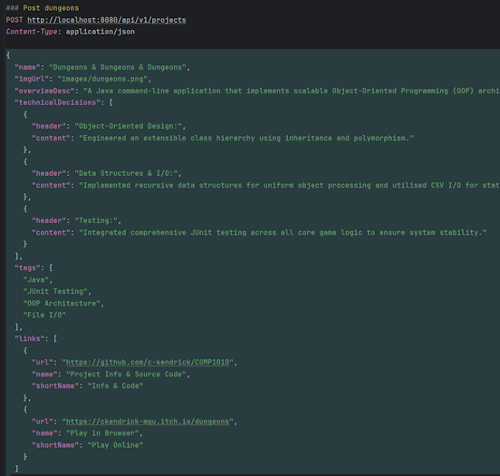
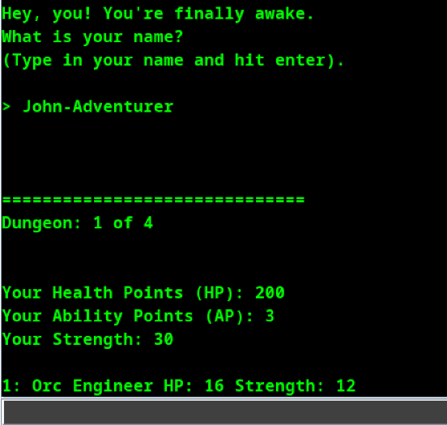

Portfolio
Minecraft Multiplayer Systems
Overview: Built and deployed custom multiplayer systems for a live Minecraft server used by 200+ players.
Technical Decisions:
- Real-Time Game Logic: Implemented event-driven systems to govern combat, diplomacy, territory control, and player interactions.
- Access Control: Designed a custom role-based permission model to validate hierarchical actions across gameplay systems.
- API Integration: Integrated WorldEdit, WorldGuard, and Vault for region protection, spatial manipulation, and economy features.
- Spatial Validation: Built chunk-based coordinate logic to manage land ownership and boundary enforcement.

Counter Knights: Arcane Offensive
Overview: A Unity WebGL game focused on deterministic movement, AI behaviour, and input-driven combat systems.
Technical Decisions:
- Gameplay Systems: Designed a recoil and deviation system where movement and firing directly alter combat accuracy.
- AI Behaviour: Implemented finite state machines driven by raycasting and line-of-sight checks.
- Deterministic Movement: Used transform-based movement to keep gameplay predictable and lightweight in the browser.
- Component Design: Built prefab-driven combat systems so projectiles and spells could be tuned independently.

Headless Portfolio API
Overview: A backend application that decouples portfolio data management from frontend presentation.
Technical Decisions: Built a Spring Boot REST API to serve structured project data, implemented PostgreSQL persistence through JPA, and added server-side display ordering logic for controlled rendering. Configured CORS to securely enable client communication across origins.

Dungeons & Dungeons & Dungeons
Overview: A Java command-line RPG built around extensible object-oriented systems, combat logic, and local persistence.
Technical Decisions: Built a modular class structure using inheritance and polymorphism, implemented recursive combat logic and algorithmic damage calculations, and stored game state with CSV-based file handling. Added JUnit tests for core logic to improve reliability.
